Wie löse ich Matheaufgaben?
Volumen
Sie sehen ein gelbes Eingabefeld und die
Schalter: Prüfen und Lösung.
Tragen Sie Ihr Ergebnis ein, prüfen Sie es
oder starten Sie eine Lösung.
Aufgabe 78
Ein Geschenkkarton aus Pappe hat die dargestellte Form eines Hauses. Wie viel Pappe braucht man für ein Haus, wenn 18% Abfall entstehen? Alle Maße in cm.
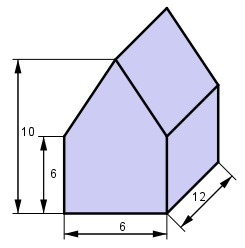
Man braucht cm2Aufgabe 79
Wie groß ist das Füllvolumen V des dargestellten oben offenen Containers, wenn die Wände 5 cm dick sind? Wie groß ist der Schutzanstrich S außen?
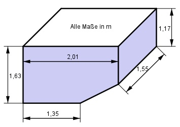
Aufgabe 80
Wieviel l Wasser passen in das Schwimmbecken, bis es randvoll ist? Das Becken wird innen gefliest. Welche Kosten entstehen, wenn 1 m2 Fliesen 45 € kostet?
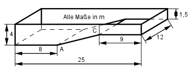
Füllmenge = lAufgabe 81
75 ml Eau de Toilette sind in einem Karton mit
den Maßen
5,8 cm x 5 cm x 15,9 cm verpackt.
Um wieviel Prozent ist das Verpackungsvolumen
größer als das Flaschenvolumen?
Aufgabe 82
Ein Schwimmbecken mit den Maßen
50 x 15 x 1,80 m
ist mit 480 m2 Wasser gefüllt. Wie hoch steht es?
Wieviel muss nachgefüllt werden, bis es randvoll
ist?
Aufgabe 83
100 Holzstämme sind, wie dargestellt, in 10 Reihen zu je 10 Stämmen gestapelt. Die Stämme sind 10 cm im Durchmesser und 1 m lang. Wie viel Holz und Luft enthält der Stapel? Wie schwer ist der Stapel, wenn er aus Buche mit einer Dichte von 0,7 g/cm3 besteht?
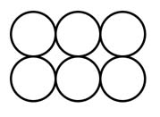
Aufgabe 84
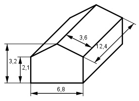
Das Gewächshaus besteht aus Glas. (Alle Maße in m). Wie groß ist die Glasfläche? Es sind m2 Der Boden soll mit Platten 40 * 40 cm ausgelegt werden. Wie viel Platten werden benötigt? Wie groß ist das Innenvolumen des Gewächshauses?Aufgabe 85
Auf einem Kinderfest können die Kinder durch einen, mit Ringen verstärkten, zylindrischen Tunnel kriechen. Der Tunnel ist 2,8 m lang und hat einen Durchmesser von 53 cm. Welche Breite muss eine Plane haben, um daraus den Tunnel zu bilden? Wie viel Ringe braucht man bei einem Abstand von 20 cm zueinander?
Aufgabe 86
Wie viel Hubraumsteuer muss man für einen Vierzylinder-Dieselmotor mit einem Zylinderdurch- messer von 82 mm und einem Hub von 90 mm bezahlen? Jede angefangenen 100 cm3 kosten 11,50 €.
Steuer = €Aufgabe 87
Wie oft muss man mit einer Fahrradpumpe pumpen, (Durchmesser 2,6 cm, Hub 28 cm), wenn 2 l Luft in den Schlauch kommen sollen?
Aufgabe 88
Ein Getreidesilo ist 18 m hoch und hat einen Innendurchmesser von 7,5 m. Wie groß ist seine Innenwandfläche? Wie viel m3 Getreide können dort gelagert werden?
Es sind m3Aufgabe 80
Ein Schwimmbecken ist 6 m lang, 4 m breit und 1,50 m hoch. Wie viel l Wasser sind in dem vollen Becken?
Aufgabe 90
Orangensaft wird in Pappkartons mit einer quadratischen 5 cm x 5 cm Grundfläche und einem Inhalt von 750 cm3 angeboten. Wie groß sind seine Höhe h und seine Oberfläche O?
h = cmAufgabe 91
Ein rechteckiger Kasten mit einem 65 cm langen und 38 cm breiten Boden schwimmt auf dem Wasser und verdrängt dabei 12 l Flüssigkeit. Welche Höhe h hat der Kasten?
Aufgabe 92
Wie hoch stehen 18 l einer Flüssigkeit in einem würfelförmigen Gefäß mit einer Seitenlänge von 50 cm?
h = cmAufgabe 93
Ein quadratischer Holzbalken ist 6 m lang, hat
eine Masse von 38 kg und eine Dichte von
0,65 g/cm2. Wie lang ist eine Quadratseite a?
Aufgabe 94
Aus einem 18 cm langen Rundstahl mit einem Durchmesser von 7 cm soll der größtmögliche quadratische Vierkant ausgefräst werden? Wie groß sind die Anstelltiefe a des Fräsers und das Volumen V des fertigen Vierkants?
V = cm3Aufgabe 95
Wie viel laufenden Meter Leisten entspricht
1 m2?
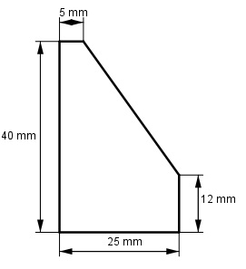
Aufgabe 96
Eine quadratische Stahlstange ist 65 cm lang mit
einer Quadratseite von
8 cm. Sie wird so
bearbeitet, dass aus dem Quadrat ein regelmäßiges
Achteck wird.
Wie groß ist der Materialverlust m bei einer
Dichte von
7,2 g/cm3?
Aufgabe 97
Welche Masse m haben 100 der dargestellten Stahlspachteln mit einer Dichte von 7,85 g/cm3?
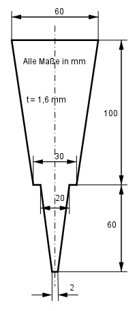
Aufgabe 98
Eine 1,5 m lange Schiene hat als Querschnitt ein gleichschenkliges Trapez nit den parallelen Seiten 4 cm und 5 cm. Welche Höhe h hat die Schiene, wenn ihr Volumen 3,5 dm3 beträgt?
h = cmAufgabe 99
Eine Schneide einer Balkenwaage hat die Form
eines gleichschenkligen Dreiecks mit der Basis
6 mm und der Länge eines Schenkels von
14 mm.
Welche Masse m hat die Schneide, wenn sie 20 mm
dick ist bei einer Dichte von 7,85 g/cm3?
Aufgabe 100
Wie groß ist das Volumen V des 178 mm langen Profilstahls?
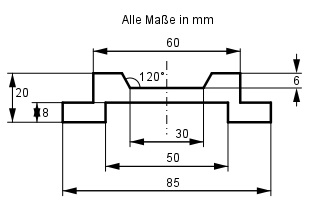
V = cm3Aufgabe 101
Ein 32 cm langer gusseiserner Stab hat als
Querschnitt eine Raute mit den Diagonalen
14 mm
und 22 mm. Welche Masse m haben 50 Stück bei
einer Dichte von 7,2 g/cm3?
Aufgabe 102
Die Stirnwand eines Anbaus soll eine 1,5 cm dicke Putzschicht erhalten. Der Putz ist aus Kalk und Sand im Verhältnis 1 : 4. gemischt. Wie viel m3 Kalk und Sand benötigt man?
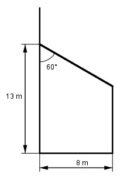
Kalk m3Aufgabe 103
Aus 350 cm3 Kunststoff soll ein
regelmäßiges sechseckiges Formteil gepresst
werden, das
6 cm dick ist. Wie groß ist
die Seite a des Sechsecks?
Aufgabe 104
Ein Dreikantstahl hat als Grundfläche ein gleichseitiges Dreieck mit einer Seitenlänge von 4 cm und ein Volumen von 700 cm2. Durch Auswalzen soll eine Seitenlänge auf 2,8 cm erzielt werden. Wie lang ist der Stahl vor und nach dem Auswalzen?
Danach cmAufgabe 105
Eine 1,2 m lange Stahlschiene (Dichte
7,85 g/cm3)
hat als Grundfläche ein Parallelogramm dessen
lange Seite 47 mm misst und mit der kurzen Seite
von 25 mm einen Winkel von 60° einschließt.
Wie groß ist ihre Masse m?
Aufgabe 106
Wie groß ist das Volumen V des größeren Teils des Profilstahls nach dem Trennen?
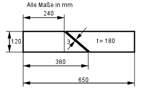
V = cm3Aufgabe 107
Welche Masse m haben 100 der dargestellten
Messinglagerbuchsen bei einer Dichte von
8,5 g/cm3?
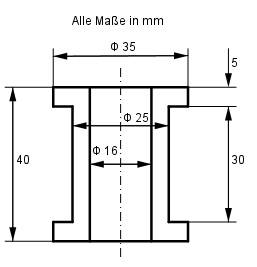
Aufgabe 108
Wie groß ist der von der Schutzhaube umschlossene Raum V, und wie viel Blech M ist zur Herstellung nötig?
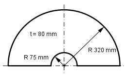
V = dm3Aufgabe 109
Welche Länge l hat ein Kupferdraht mit einem
Durchmesser von 3 mm, einer Dichte von
8,9 g/cm3
und einer Masse von 8,4 kg?
Aufgabe 110
Ein Rundsockel ist 60 cm hoch und besteht aus 1,4 m3 Beton. Wie groß ist sein Durchmesser d?
d = mAufgabe 111
Ein Bleiring ist 15 mm hoch, hat einen Innendurchmesser von38 mm und einen außen von 62 mm. Er wird so ausgewalzt, dass sein Innendurchmesser 45 mm bei gleicher Höhe beträgt. Wie groß ist der neue Außendurchmesser d?
Aufgabe 112
Eine Leitung vom Warmwasserboiler bis zum Wasser- hahn ist 8,2 m lang und hat einen Innendurchmesser von 21 mm. Wie viel Wasser muss am Hahn abfließen, bevor das erste Warmwasser kommt?
lAufgabe 113
Eine Fabrik stellt täglich 10 000 Dosen mit einem Durchmesser von 8 cm und einer Höhe von 12 cm her. Wie groß ist der Materialbedarf für eine Dose? Wie groß ist er für die tägliche Produktion, wenn mit 6% Verschnitt gerechnet wird?
Aufgabe 114
Ein Abwasserrohr aus Beton (Dichte 2,4 t/m3) hat einen Außendurchmesser von 90 cm, eine Wanddicke von 10 cm und ist 2,5 m lang. Wie viel wiegt ein Rohr?
Es wiegt t Wie viele Rohre können auf einen 20 t Lkw geladen werden?Aufgabe 115
Der gemauerte Rand eines runden Beckens ist 38 cm stark und 1,5 m hoch. Wie viel Material benötigt man für die Mauer, wenn der Innendurchmesser des Beckens 8,5 m beträgt?
Aufgabe 116
Ein Stahlrohr mit einem Außendurchmesser von
18 cm und einer Wandstärke von 1 cm ist
4,85 m
lang und führt Wasser. Nach wie viel Sekunden ist
das Rohr durchflossen, wenn die Fließgeschwindigkeit
10 dm3/s beträgt?.
Aufgabe 117
Ein 870 m langer Tunnel mit dem dargestellten Profil soll innen gestrichen werden. Wie groß ist die zu streichende Fläche? Wie groß ist das Luftvolumen, das im Tunnel ausgetauscht werden soll?
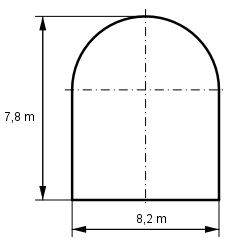
Aufgabe 118
Der Belag der 4,75 m tiefen Skateboardanlage wird erneuert. Welche Fläche nimmt er ein? Wie schwer ist er, wenn er 5 mm dick ist und eine Dichte von 7,9 g/cm3 hat?
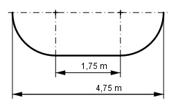
kgAufgabe 119
Eine Rolle Blumendraht (Dichte 7,8 kg/dm3) hat eine Masse von 13,5 kg. Wie lang ist der Draht, wenn er einen Durchmesser von 2,4 mm hat?
Es sind mAufgabe 120
Ein Kupferdraht (Dichte 8,8 g/cm3) ist 100 m lang und wiegt 1,75 kg. Wie groß ist sein Durchmesser d?
Aufgabe 121
Ein Silberdraht (Dichte 10,5 g/cm2) ist 10 m lang
und wiegt 78 g. Er soll mit 6 g Gold (Dichte
19,3 g/cm3) vergoldet werden.
Welchen Durchmesser d hat der Silberdraht?
Aufgabe 122
Eine Straßenwalze ist 1,5 m breit und hat einen Durchmesser von 1,1 m. Welche Fläche A kann sie bei einer Umdrehung walzen? Welche Fläche B walzt sie, wenn sie 1 Stunde mit einer Geschwindigkeit von 5 km/h fährt?
Aufgabe 123
Auf Flugplätzen verwendet man zylindrische Erdtanks mit einem Durchmesser von 2,2 m und einem Fassungsvermögen von 20 000 l. Wie viele solcher Tanks lassen sich auf einer quadratischen Fläche von 900 m2 in 2 Etagen unterbringen? Wie hoch sind die beiden Etagen?
Sie sind m hoch.Aufgabe 124
Ein Flugzeug hat ein rechteckiges Prisma als
Rumpftank mit den Abmessungen
1 700 x 1 000 x 500 mm und zwei 1 000 mm lange
trapezförmige Prismen als Flächentanks, siehe
Abbildung.
Wie viel Liter Kraftstoff kann es tanken?
Wie groß ist sein Aktionsradius bei einem
Verbrauch von 4,4 l/km?
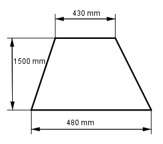
Aufgabe 125
a) Wie schwer ist ein 200 m langer Kupferdraht (Dichte 8,9 g/cm3) mit einem Durchmesser von 2 mm?
b) Wie schwer ist die 1 mm dicke Isolierung (Dichte 1,5 g/cm3)? b) gAufgabe 126
Ein Holzstab (Dichte 0,7 g/cm2) mit einer 3 mm dicken Kupferummantelung (Dichte 8,9 g/cm2) hat einen Außendurchmesser von 12 cm und eine Länge von 20 cm. Wie viel wiegt der ummantelte Stab?
Aufgabe 127
Ein Aluminiumwürfel Seitenlänge 8 cm, Dichte 2,7 g/cm2, bekommt 4 Bohrungen mit 8 mm Durchmesser und 6 cm tief. Wie schwer ist der fertige Würfel?
kgAufgabe 128
Ein zylindrisches Glas für Coca-Cola hat einen Durchmesser von 5,4 cm. In welcher Höhe muss ein Eichstrich für 0,2 l angebracht werden?
Aufgabe 129
Eine Litfasssäule hat einen Umfang von 3,5 m und ist 3,2 m hoch. Welche Fläche steht für Reklame zur Verfügung?
Es sind m2Aufgabe 130
Ein Messzylinder mit einem Durchmesser von 3,2 cm soll Teilstriche für je 5 cm2 bekommen. Wie groß ist der Abstand von Teilstrich zu Teilstrich?
Aufgabe 131
Ein Messzylinder soll Teilstriche für 5 cm3 im Abstand von 5 mm bekommen. Wie groß muss sein Durchmesser d sein?
d = mmAufgabe 132
Ein Baumstamm (Dichte 0,45 g/cm3) ist 8,6 m lang und hat einen Umfang von 1,75 m. Wie viel wiegt er?
Aufgabe 133
Kinder haben diese Figuren aus Strohballen gleicher Größe hergestellt. Wie groß ist deren Gesamtgewicht m, wenn die Dichte von Stroh 0,12 kg/dm2 beträgt? Wie viel m2 Folie braucht man, um die Ballen einzupacken?
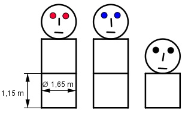
Aufgabe 134
Ein Ölfass hat einen Innendurchmesser von
60 cm
und eine Innenhöhe von 80 cm und wiegt leer 28 kg.
Wie schwer ist das gefüllte Fass, wenn das Öl
eine Dichte von 0,94 kg/dm3 hat?
Aufgabe 135
In Computerchips verwendet man Golddrähte mit
einem Durchmesser von 0,01 mm. Wie lang ist ein
solcher Draht, wenn er ein Volumen von
1 cm3 hat?
Wie schwer ist 1 m davon, wenn Gold eine Dichte
von 19,1 g/cm3 hat?
Aufgabe 136
Aus einer Grube mit rechteckigem Querschnitt 8,5 m x 4 m hat ein Bagger 96 m3 Erdreich abgegraben. Wie tief ist die Grube? Wie viel Erdreich muss noch abgegraben werden, damit eine Tiefe von 4,3 m erreicht ist?
m3Aufgabe 137
Die Außenmaße eines rechteckigen 8 m hohen
Maschinenraums (einschließlich Betonfundament
von 80 cm) sind 3,8 m * 4,2 m. An einer Seite
ist eine Tür mit den Maßen
1,3 m * 2,1 m
ausgespart. Das Mauerwerk ist
25 cm dick.
Wie groß ist das Volumen V des Mauerwerks?
Aufgabe 138
Eine Stahlschiene 3,1 cm x 2,6 cm mit einer Länge von 1,28 m wird in 8 gleiche Teile zersägt. Wie viel wiegen diese Teile insgesamt, wenn die Dichte 7,85 kg/dm3 beträgt und der Sägeschnitt 1,8 mm breit ist?
kgAufgabe 139
Aus einem m3 Holz sollen Bretter von 18 mm Dicke und 22 cm Breite geschnitten werden. Wie viel laufende Meter erhält man, wenn der Schnittverlust 15% beträgt?
Aufgabe 140
Ein Baustellenfahrzeug hat eine Ladefläche von 2,82 m x 1,68 m x 0,55 m. Seine Tragfähigkeit beträgt 1,13 t. Um wie viel t ist sie überschritten, wenn es mit Sand (Dichte 1,6 t/m2) voll beladen wird?
Um t Wie hoch dürfte es nur beladen werden, damit sie nicht überschritten wird?Aufgabe 141
Auf dem dargestellen 1 km langen Straßenabschnitt
soll Müll verbaut werden.
Wie viel m3 kann man unterbringen?
Wie viel m3 Straßenunterbau sind es?
Entlang der Linie
A-B-C-D soll als Schutz für den
Boden Folie verlegt werden.
Wie viel m2 braucht man?
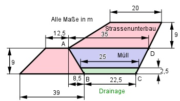
Aufgabe 142
Auf einer zylindrischen Farbdose steht: Nettoinhalt 2 500 ml. Der gemessene Dosenduchmesser beträgt 14 cm, die gemessene Dosenhöhe 19 cm. Wie viel Prozent des Dosenvolumens beträgt der Nettoinhalt?
%Aufgabe 143
Eine zylindrische Farbdose enthält 3/8 l Farbe,
das sind 65,6% des Doseninhalts.
Die Dose ist
9 cm hoch.
Wie groß ist ihr Radius r?
Aufgabe 144
Eine zylindrische Farbdose enthält 3/4 l Farbe, das sind 79,6% des Doseninhalts. Die Dose hat einen Durchmesser von 10 cm. Wie hoch ist sie?
h = cmAufgabe 145
Eine Firma stellt die dargestellten Sitzelemente aus Beton für Rastplätze usw. her. Wie viel m3 Beton braucht man für ein solches Element?
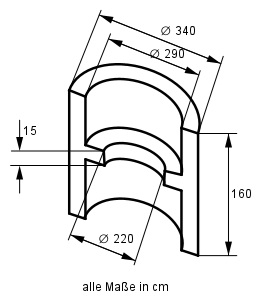
Aufgabe 146
Berechnen Sie das Volumen V des dargestellten Treibhauses. Wie groß ist die Glasfläche A ohne Berücksichtigung der Streben?
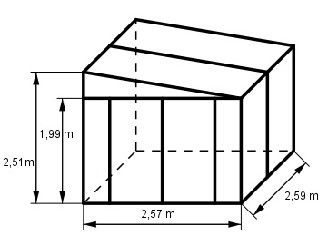
A = m2Aufgabe 147
In einem Bottich befinden sich 2 m3 Wasser. Zwei parallel stehende trapezförmige Seitenwände haben einen Abstand von 2 m. Der Boden ist 1,5 m breit, die Flüssigkeitsoberfläche 1,75 m. Wie hoch steht die Flüssigkeit?
Aufgabe 148
Das 180 m lange Bogengewölbe ist aus Beton. Wieviel Material braucht man zur Herstellung? Wie viel m3 Erdreich müssen für den überdeckten Schacht ausgebaggert werden?
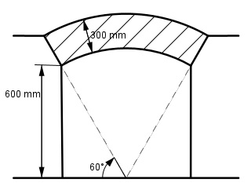
m3Aufgabe 149
Aus einem 60 mm langen Sechskantstahl mit einer
Schlüsselweite von
17 mm soll eine Schraube M10
mit einem 8 mm hohen Kopf hergestellt werden.
Berechnen Sie den Abfall A in cm3.
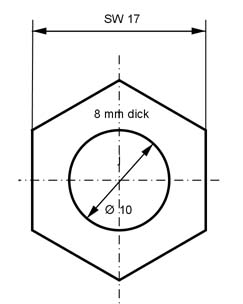
Aufgabe 150
Ein Stahlblock hat die Maße
20 cm x 30 cm x 1 m.
Wie viel laufende Meter Rundstahl mit 30 mm
Durchmesser entstehen beim Auswalzen?
Aufgabe 151
180 kg Grauguss (Dichte 7,2 g/cm3) sollen zu einem Rohr mit einem Innendurchmesser von 120 mm und einer Wanddicke von 10 mm verarbeitet werden. Wie lang wird das Rohr?
Aufgabe 152
Welche Seitenlänge a hat ein Würfel, der aus 2 Bleiwalzen mit 34 mm Durchmesser und einer Höhe von 48 mm hergestellt wird?
a = cmAufgabe 153
Wie lang wird die dargestellte Rinne, wenn sie aus 1 m3 Beton hergestellt wird?
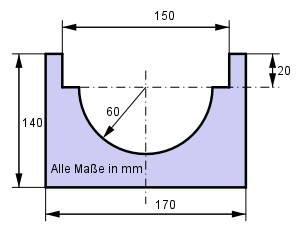
Aufgabe 154
Eine Dose, deren Durchmesser d doppelt so groß wie die Höhe h ist, fasst 1 dm3. Wie groß ist h?
h = cmAufgabe 155
Eine Stahlplatte (Dichte 7,85 g/cm3) ist 12 cm breit, 8 cm lang und 5 cm hoch. In sie wird der Länge nach eine gleichschenklig rechtwinklige Nut mit einer Hypotenuse von 2,5 cm eingefräst. Wie schwer ist die fertige Platte?
Aufgabe 156
Eine quadratische Stahlschiene (Dichte
7,85 kg/dm3) mit einer Seitenlänge von
14 mm und einer Oberfläche O von 892 cm2 soll
durch eine quadratische Aluminiumschiene (Dichte
2,7 g/cm3) mit doppeltem Querschnitt aber
gleicher Länge ersetzt werden.
Welche Gewichtseinsparung m ergibt sich?
Aufgabe 157
Wie hoch muss ein Wasserbehälter mit quadratischem
Boden innen sein, wenn er
3,6 m3 fassen soll,
Außenkanten von 80 cm hat und aus 8 mm dickem
Blech besteht?
Aufgabe 158
Ein Holzkasten ist außen 68 cm breit, 72 cm lang und 86 cm hoch. Wie viel m3 Holz braucht man für 30 rundum geschlossene Kästen, wenn die Wände 26 mm dick sind und 12% Schnittverlust entsteht?
m3Aufgabe 159
In eine Stahlplatte 45 cm x 30 cm x 250 cm wird der Länge nach eine Schwalbenschwanzführung eingefräst. Sie hat die Form eines gleichseitigen Trapezes mit der kürzeren parallelen Seite von 20 cm, einer Neigung der Schenkel zur Grundseite von 60° und einer Höhe von 10 cm. Welches Volumen V hat die Platte und welche Oberfläche O?
Aufgabe 160
Ein 3,4 km langer Damm, Querschnitt gleich- schenkliges Trapez und mit einem Böschungswinkel von 30°, soll so aufgeschüttet werden, dass eine 3,5 m breite Dammkrone und eine Dammhöhe von 4 m entstehen. Wie viel m2 Erde müssen dafür bewegt werden?
Es sind m3Aufgabe 161
Wie lang wird ein Draht mit einem Durchmesser von 0,3 mm, der aus einem Rundstahl, 28 mm lang und einem Durchmesser von 8 mm, gezogen wird?
Aufgabe 162
An einem 720 mm langen Quadratstahl (Dichte 7,85 g/cm3) mit einer Seitenlänge von 3 cm werden auf beiden Seiten zylindrische Lagerzapfen mit 18 mm Durchmesser und einer Länge von 58 mm angedreht. Wie viel wiegen 100 Bauteile? Wie hoch ist der gesamte Abfall M?
M = kgAufgabe 163
Ein quadratisches Blech mit 25 cm Seitenlänge und 4 mm dick wird zu einem Hohlzylinder umgebogen. Wie groß ist sein Außendurchmesser d? Wie groß ist das lichte Volumen V?
Aufgabe 164
Aus Aluminiumplatinen mit einem Durchmesser von 35 mmund einer Höhe von 15 mm sollen durch Tiefziehen Becher mit einem Innendurchmeser von 34 mm und einer Bodendicke von 1 mm hergestellt werden. Wie hoch ist ein Becher?
cmAufgabe 165
Wie schwer ist der dargestellte Graugusshebel (Dichte 7,2 g/cm3)?
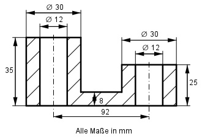
Aufgabe 166
Eine hydraulische Presse hat einen Geberzylinder und einen Nehmerzylinder. Sie sind durch eine Flüssigkeitsleitung miteinander verbunden. Der Geberzylinder hat einen Durchmesser von 4,2 cm, der Nehmerzylinder einen von 26 cm. Um welchen Betrag h verschiebt sich der Kolben im Nehmerzylinder, wenn der Kolben im Geberzylinder um 7,5 cm verschoben wird?
Um cm Wie viel Hübe im Geberzylinder braucht man, wenn sich der Kolben im Nehmerzylinder um64 cm verschieben soll?
Aufgabe 167
Ein Kolben mit einem Durchmesser von 65 mm bewegt sich in einem Zylinder auf und ab. Das größte entstehende Volumen beträgt 1,5 dm3, das kleinste 0,11 dm3. Wie groß ist der Kolbenhub?
Aufgabe 168
Wie schwer ist der Kupplungsflansch aus Stahl, Dichte 7,85 g/cm3?
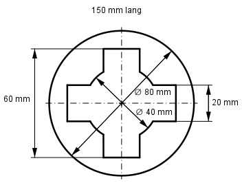
gAufgabe 169
Berechnen Sie die Masse m der Klauenkupplung (Dichte 7,2 kg/dm3).
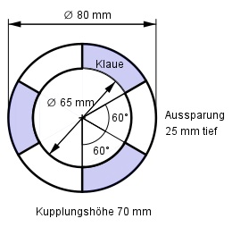
Aufgabe 160
Aus dem Rundstahl, Dichte 7,85 g/cm3, wird über die gesamte Länge die dargestellte Nut ausgefräst. Wie schwer ist der Stab nach dem Ausfräsen?
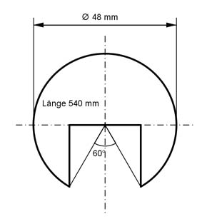
kgzurück